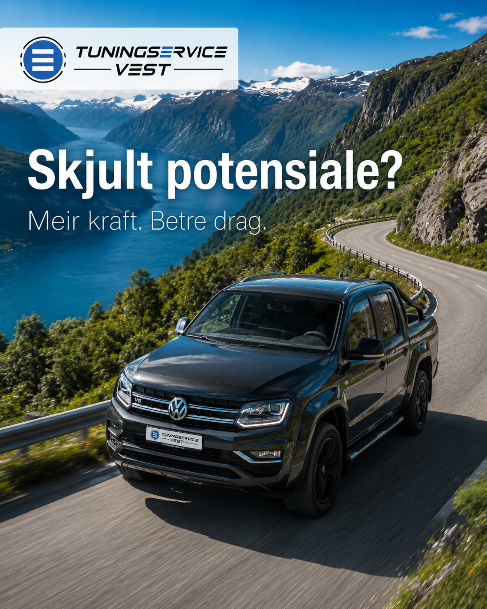
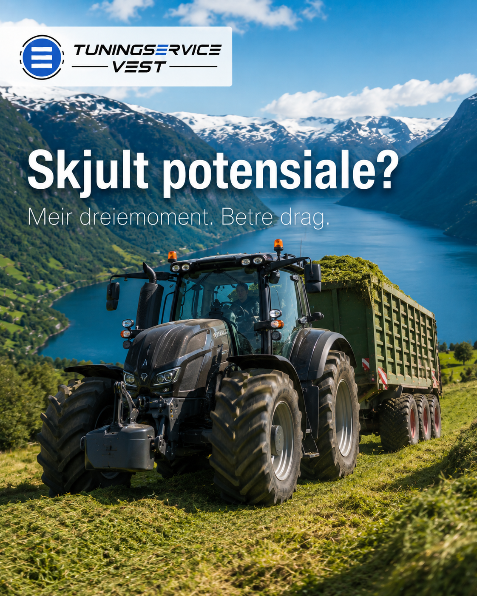
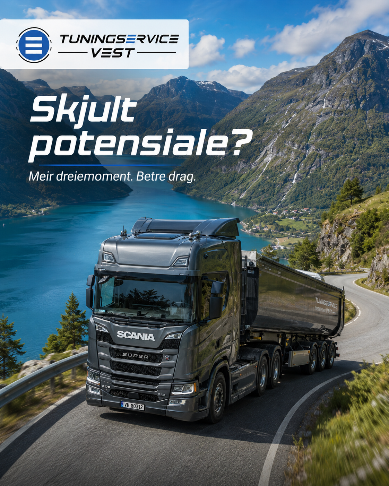

Minimer nedetiden med vår mobile service.
Over 25 års erfaring og spesialtilpassede løsninger.
Konkurransedyktige priser uten å gå på kompromiss med kvalitet.
Rens av DPF, EGR og SCR for anleggsmaskiner.
Vedlikehold, reparasjon og optimalisering av AdBlue.
Diagnostisering av motorfeil og elektroniske systemer.
Tuning og oppgradering av styringsprogramvare.
Vi kommer ut til deg for å løse problemer på maskinen.
Tuningservice Vest har over 25 års erfaring med motorservice, feilsøking og vedlikehold av anleggsmaskiner. Vi tilbyr mobile tjenester i hele Vestland og reduserer nedetid med vår høye kompetanse.
TuningService ble opprettet i 2011 og er en videreføring av et tidligere firma. Vi har vært i bransjen siden 2007 og har med det god erfaring innen optimalisering av kjøretøy.
Grunnet ekspertise, konkurransedyktige priser og ikke minst en programvare som er blant markedets beste har vi blitt et anerkjent merke i Norge.



Har du problemer med eksosrensing, AdBlue eller DPF? Ta kontakt for en uforpliktende prat – vi kommer til deg.